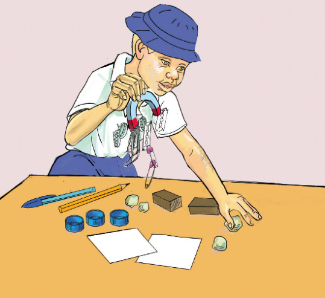

Kazi ya kufanya namba 1: Kuchunguza vitu vinavyovutwa na sumaku
Mahitaji: sumaku, vipande vya chaki, vibanio vya karatasi vya chuma, vipande vya karatasi, vifuniko vya soda na vya chupa za maji, kalamu ya wino, penseli, vipande vya mbao, pini na wembe
Hatua
1. Kusanya vitu vilivyoorodheshwa na viweke juu ya meza.
2. Chukua sumaku kisha ipitishe karibu na vitu ulivyovikusanya. Angalia au sikiliza maelezo ya Kielelezo namba 1. Je kimetokea nini?

3. Andaa jedwali na jaza majina ya vitu vilivyovutwa na visivyovutwa na sumaku.
Usumaku ni uwezo wa sumaku kuvuta au kusukuma vitu. Sumaku hutumia uwezo huu kuvuta vitu vyenye asili ya chuma. Kwa hivyo, sumaku ni kifaa ambacho kina uwezo wa kuvuta vitu vyenye asili ya chuma. Kila sumaku ina ncha mbili. Ncha hizo ni ncha ya Kaskazini (KAS) na Kusini (KUS). Sumaku huzalisha uga wa sumaku. Uga wa sumaku ni eneo linazunguka sumaku ambalo kani ya sumaku huhisiwa. Kani ya sumaku ndiyo inayosababisha vitu kuvutwa au kusukumwa na sumaku. Kwa hiyo, kani ya sumaku kuvuta au kusukuma husababishwa na usumaku. Pia, kani ya sumaku huwakilishwa na mistari ya kufikirika inayoitwa mistari ya kani ya sumaku ambayo huonekana unaposambaza unga wa chuma kuzunguka sumaku mche mstatili. Unga wa chuma hujipanga kwa muundo maalum na kuunda mistari.